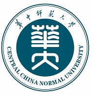
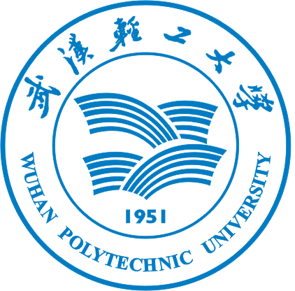

About Me 孙见弛
I am a Ph.D. candidate in computer science and technology, supervised by Prof. Chunxia Xiao, at Wuhan University, China. Before that, I received the B.S. degree in information and computing science from Wuhan Polytechnic University, China, in 2020, and the M.E. degree in computer science and technology from Central China Normal University, China, in 2023.
I have authored (co-authored) more than 10 papers in refereed top international journals and conference proceedings, including IEEE TVCG, ACM TOG, IEEE TMM, AAAI, ACM MM, and Chinese Journal of CAD&CG, etc.
My research interests include geometry processing and 3D human reconstruction.
I am open to research collaborations and academic opportunities. Please feel free to get in touch.
Education


Publication
Loading publications…
Awards & Service
- 挑战杯全国大学生课外科技作品大赛第二负责人 · 湖北省一等奖
- 中国机器人及人工智能比赛负责人 · 国家三等奖
- 全国大学生数学建模竞赛负责人 · 湖北省三等奖
- 美国大学生数学建模竞赛负责人 · Meritorious Winner奖